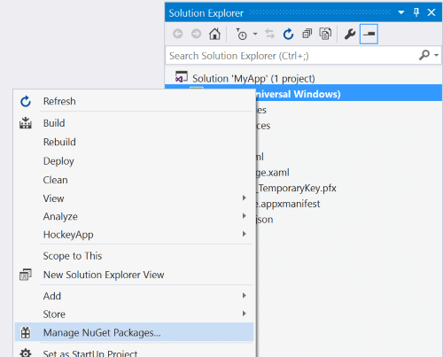

Introduction to the High Performance package
The 📦 CommunityToolkit.HighPerformance package contains helpers and extensions to work in high-performance scenarios. This package can be installed through NuGet, and it has the following multitargets:
- .NET Standard 2.0
- .NET 7
This means that you can use it for anything from UWP or legacy .NET Framework applications, games written in Unity, cross-platform mobile applications using Xamarin, to .NET Standard libraries and modern .NET 7 and later applications. The API surface is almost identical in all cases, and lots of work has been put into backporting as many features as possible to older targets like .NET Standard 2.0. Except for some minor differences, you can expect the same APIs to be available on all target frameworks. The reason why multi-targeting has been used is to allow the package to leverage all the latest APIs on modern runtimes whenever possible, while still offering most of its functionalities to all target platforms.
Get started
To install the package from within Visual Studio:
In Solution Explorer, right-click on the project and select Manage NuGet Packages. Search for CommunityToolkit.HighPerformance and install it.

Add a using or Imports directive to use the new APIs:
using CommunityToolkit.HighPerformance;Imports CommunityToolkit.HighPerformanceCode samples are available in the other docs pages for the MVVM Toolkit, and in the unit tests for the project.
When should I use this package?
As the name suggests, the High Performance package contains a set of APIs that are heavily focused on optimization. All the new APIs have been carefully crafted to achieve the best possible performance when using them, either through reduced memory allocation, micro-optimizations at the assembly level, or by structuring the APIs in a way that facilitates writing performance oriented code in general.
This package makes heavy use of APIs such as:
System.Span<T>System.Memory<T>System.Buffers.ArrayPool<T>System.Runtime.CompilerServices.UnsafeSystem.Runtime.InteropServices.MemoryMarshalSystem.Threading.Tasks.Parallel
If you are already familiar with these APIs or even if you're just getting started with writing high performance code in C# and want a set of well tested helpers to use in your own projects, have a look at what's included in this package to see how you can use it in your own projects!
Where to start?
Here are some APIs you could look at first, if you were already using one of those types mentioned previously:
Span2D<T>andMemory2D<T>, for aSpan<T>andMemory<T>-like abstraction over 2D memoryMemoryOwner<T>andSpanOwner<T>, if you were usingSystem.Buffers.ArrayPool<T>.StringPool, for anArrayPool<T>-like type to cachestringinstancesParallelHelper, if you were usingSystem.Threading.Tasks.Parallel.
Additional resources
You can find more examples in the unit tests.